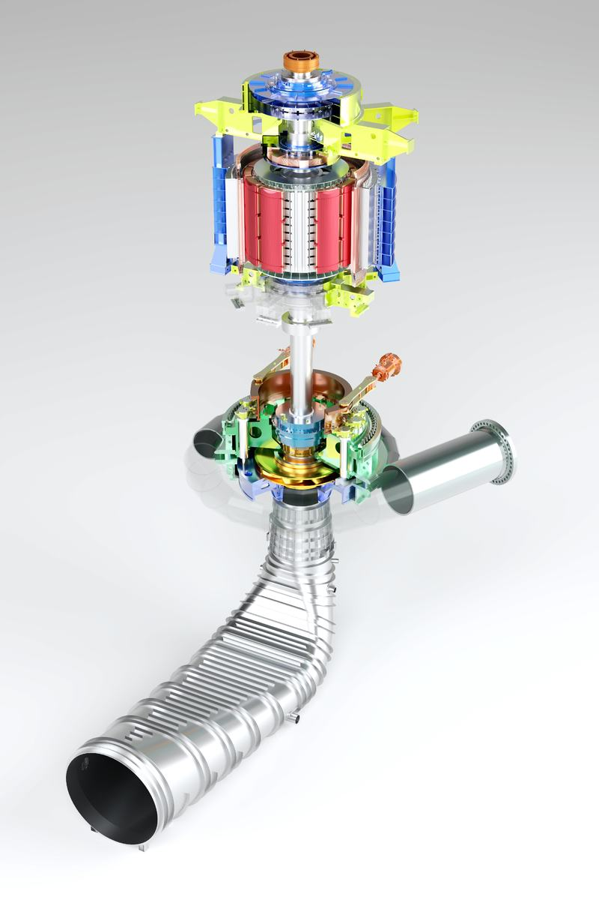
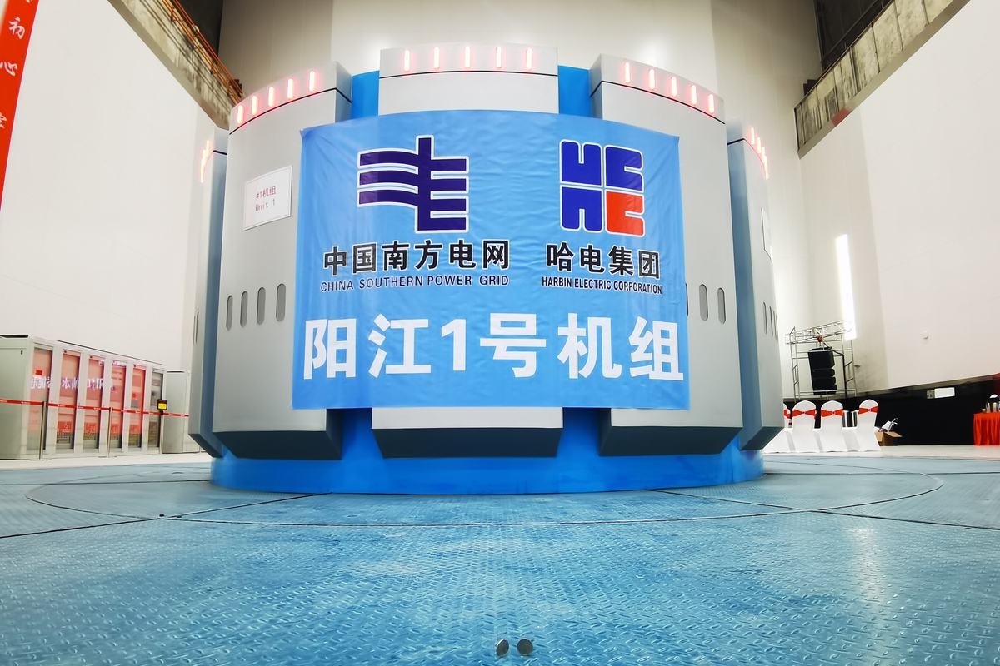
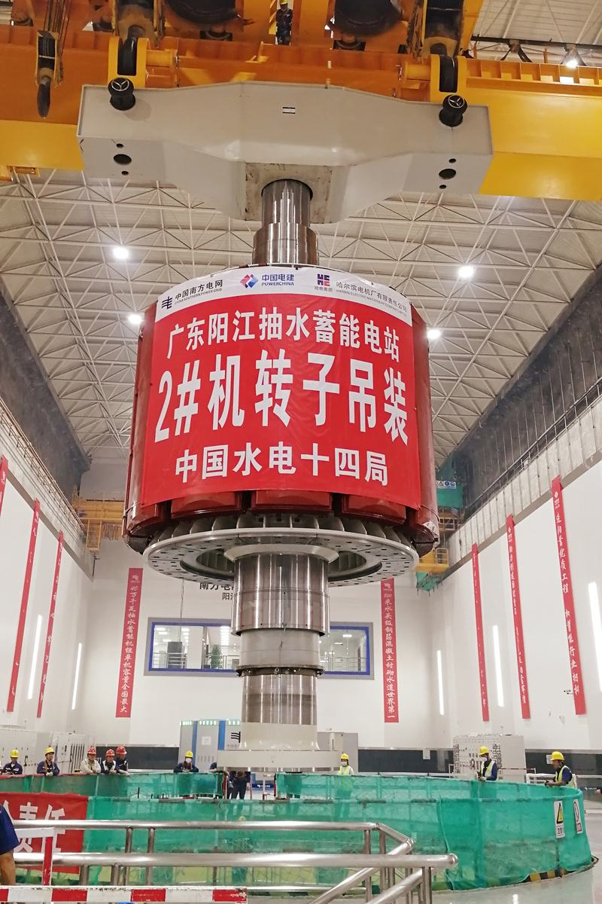

哈尔滨电机厂有限责任公司设计的700米水头段、400兆瓦级高转速抽水蓄能机组，是国家“十三五”水电发展规划中40万千瓦级设备自主化的依托项目，是我国单机容量最大、综合技术难度和设计水平最高的抽水蓄能机组。机组成功应用于阳江抽水蓄能电站。
抽水蓄能是当前技术最成熟、全生命周期碳减排效益最显著、经济性最好且最具大规模开发条件的电力系统调节电源，是构建以新能源为主体的新型电力系统中不可或缺的一部分。
创新性方面，为保证机组安全稳定运行，水泵水轮机采用 “稳定性优先，综合性能最优”的水力设计理念，自主研发了具有大扭转创新翼形的长短叶片转轮，实现了超高水头、大容量、高转速水泵水轮机稳定性和能量特性双兼顾，机组运行实测的振摆、压力脉动、噪音均优于国际同类机组运行水平。国际上首次实现在“一管三机”条件下700m水头段、400MW级抽水蓄能电站的过渡过程性能控制，提高“S”区及驼峰区裕度。发电电动机设计上，首次研发锻钢磁轭整体加工导向分流通风结构，开发了精准可靠的磁极线圈新型双面空冷系统，成功解决了高转速大容量蓄能机组转子冷却的技术难题。成功设计出国内抽水蓄能机组最高电压等级，高可靠性20kV少胶VPI定子绝缘系统，提高了绝缘老化寿命水平和防晕性能。
项目申请专利27项，已授权专利19项，其中发明专利6项。2022年6月，中国机械工业联合会组织了项目成果鉴定会，由3位院士等15位专家组成鉴定委员会，一致认为该项目研究技术难度大，创新性强，总体技术达到国际领先水平。标志着我国已站在世界抽水蓄能设计领域的前沿。
电站全部建成后，预计每年可节约标煤约39.6万吨，减少温室气体排放量121万吨。该项目具有完全自主知识产权，填补了我国在超高水头、高转速、大容量抽水蓄能机组设计制造上的空白。项目的完成对保障粤港澳大湾区电力供应、促进太阳能、风能等清洁能源消纳，实现“碳达峰、碳中和”目标具有重要意义。
400MW级高转速抽水蓄能机组应用于阳江抽水蓄能电站（以下简称“阳蓄电站”），位于广东省阳春市八甲镇，地理位置处于广州～湛江粤西片的中部，直线距广州市 230km，距阳春市 50km，距阳江市 60km。按照国家发改委《发改办能源【2012】2972 号》文件的要求，阳江抽水蓄能电站工程为我国“40 万千瓦级抽水蓄能电站机组设备自主化的依托项目”，属于广东省重点建设工程。 阳江抽水蓄能电站一期工程水泵水轮机的额定出力为 406.1MW，最大扬程705.5m，额定转速 500r/min，一期电站 3 台机组全部由哈电电机公司设计制造供货。机组具有超高水头（700m 水头）、高转速（500r/min）、国内单机容量最大（400MW）、技术指标最高、设计制造难度国内最大等特点，在水力开发、模型试验、参数选择、过渡过程、运行稳定性、电磁设计方案、轴系稳定、通风冷却结构、定转子绝缘体系、推力轴承结构、转动部件刚强度等方面均需要开展研究及开发，以保证机组能够安全稳定运行。
电站装机规模 2400MW，电站分近、远两期建设，一期建设规模 1200MW，枢纽永久建筑物由上水库、输水系统、地下厂房洞室群及地面开关站、下水库及上下库连接道路等组成。上水库坝址集雨面积 7.54km2，水库正常蓄水位 773.7m，死水位 745.0m，水库水位最大消落深度 28.7m。下水库坝址集雨面积 15.94km2正常蓄水位 103.7m，死水位 75.0m，水库水位最大消落深度 28.7m。电站推荐输水系统方案采用一管三机、中部开发方式。输水系统由低压引水隧洞、上游调压井、高压隧洞、高压钢支管、尾水钢支管、尾水调压井和尾水隧洞组成。输水系统总长约 3644.98m，其中：引水系统长 2252.69m，尾水系统长约 1392.29m。电站建成后，将服务广东电网，承担电力系统调峰、填谷、调频、调相及紧急事故备用。
700m、400MW、500r/min抽水蓄能机组技术指标参数如下：
名称单位指标机组额定功率MW400额定转速r/min500额定水头m653水泵最大扬程（毛）m698.7水轮机额定出力MW406.1水轮机额定流量m3/s68.95转轮直径mm4240飞逸转速r/min725水轮机模型加权平均效率%88.79发电工况额定容量MVA445电动工况输出功率MW≥431额定电压kV20额定频率Hz50发电机工况额定效率%98.82发电机工况加权效率%98.61电动机工况额定效率%98.93电动机工况加权效率%98.88一、主要创新点如下：
阳江抽水蓄能电站水泵水轮机采用 “稳定性优先，综合性能最优”的水力设计理念，以追求阳江抽水蓄能电站400MW级超大容量、超高水头水泵水轮机稳定为目标，创新的采用了能够从根本上提高超大容量、超高水头长短叶片水泵水轮机水力稳定性的优化设计方法。从长短叶片水泵水轮机叶片空间位置确定方法、超大容量水泵水轮机叶片翼型创新设计、新型低损耗双列叶栅水力优化设计等方面入手，以转轮水力优化设计、过渡过程仿真计算和动应力准确预测的联合迭代优化为手段，从本质上提升了700m水头400MW级超大容量水泵水轮机额定工况下的水力稳定性，同时具备优异的部分负荷水力稳定性和较高的加权效率水平，形成了新一代水力性能高度稳定、过渡过程高度友好、部件高度安全可靠的超高水头、超大容量长短叶片水泵水轮机，与同类水泵水轮机相比，综合性能最好、主要单项性能指标优秀。总体上达到世界领先水平。
（1）转轮采用5长+5短共10个叶片的长短叶片的水力设计技术，对于兼顾机组效率和稳定性大有裨益，提高了转轮的刚强度。机组运行平稳，噪音低，稳定运行范围宽，各项指标满足精品机组标准，综合性能超越了国内外著名制造商供货的相近机组。
（2）创新性的优化了过渡过程品质，在水泵水轮机水力优化过程中，着重提升水泵水轮机过渡过程品质，使得机组在最不利工况下过渡过程时尾水管最低压力不低于2m，远优于国家标准要求的尾水管最低压力不低于8m，达到了同类机组过渡过程品质的最好水平，确保水泵水轮机能够长期连续安全稳定运行。
（3） 通过自主研制，在核心技术上取得了重大突破，实现了阳江水泵水轮机 “S区”和“驼峰区”的稳定性、降低水泵水轮机压力脉动幅值等一系列优异成果，解决了超高水头、超大容量、高转速水泵水轮机水力稳定性和能量特性难以兼顾的世界性难题，站在了世界抽水蓄能技术领域的最前沿。
阳江抽水蓄能电站水轮机型式为竖轴混流式，金属蜗壳，包角约为345o，弯肘型尾水管，水轮机工况旋转方向为俯视顺时针，水泵工况旋转方向为俯视逆时针，用微机电液调速器控制机组运行。机组采用悬式结构，两根轴三导支撑，水泵水轮机主轴与发电电动机主轴直接连接。水轮机主要包括转动部分、导水机构部分、埋入部分和布置部分。
机组采用上拆方式，水泵水轮机可拆卸部件如转轮、主轴、主轴密封、水导轴承、顶盖、导叶、导叶操作机构、接力器等均可以利用厂房内的桥式起重机通过发电电动机定子内孔吊出和吊入。
在项目的结构设计过程中，为了确保水泵水轮机的各项性能指标优良，达到精品要求，哈电电机公司对主要部件制定了优等品考核指标，采用了先进的计算软件，对水轮机重要部件的刚强度和疲劳强度进行了分析和计算，同时还全面总结和吸取了哈电电机公司以往及国外公司水泵水轮机的设计、制造、安装和运行的经验，并结合了哈电电机公司多年总结的水泵水轮机的反措条款，对阳江电站水泵水轮机结构进行了优化设计。
项目组开展了400MW、500r/min抽水蓄能机组的电磁设计、轴系稳定、通风冷却、定转子绝缘体系、推力轴承结构、转动部件刚强度等方面的关键技术研究，研制了具有完全自主知识产权的、满足电网需求的400MW、500r/min抽水蓄能机组，在研制过程中，为保证发电电动机的先进性以及运行可靠性，进行了多方面的创新，具体如下：
（1）研制出具有优良电气和机械性能的400MW、500r/min抽水蓄能机组，技术指标优异。
（2）轴系分析全面考虑轴承油膜弹性和阻尼系数影响；充分考虑陀螺效应、支撑刚度、基础刚度、转子尺寸效应、动态载荷、转轮和止漏环处动态变形等影响因素，分析各工况的轴系动态响应，确保轴系结构最优化、动态稳定性最优。
（3）提出了创新性通风系统设计，在转子绕组上采用新型双面通风结构，使转子结构更安全可靠，冷却效果更理想。
（4）进行了更加可靠的20kV级少胶VPI定子线棒绝缘系统优化设计，大幅度提高定子防晕水平和抗老化水平，确保绝缘及防晕性能优异，单根线棒可以做到3倍电压不起晕。
（5）提出了优化的推力轴承设计，并进行了真机推力轴承全尺寸模拟试验，保证了推力轴承优异的润滑性能。
（6）对发电电动机主要部件进行精确计算，在各种正常和非正常工况下，取用经实践证明合适的安全系数。针对机组起停机频繁对于一些关键部件，尤其是转动部件，采用先进的FKM疲劳强度评价准则，对结构寿命评估更加完整和全面。提出了适应抽水蓄能机组频繁起停的转动部件设计，包括浮动磁轭设计、Ω形磁极引出线优化等，确保转动部件运行更加安全可靠。对上机架、定子机座、下机架等部件进行固有频率分析，保证足够的裕度，避免与机械、水力、电网及建筑物的振动频率产生共振。
（7）成功开发了浮动式刚性磁轭高精确度制造及高准确度安装工艺，保证了刚性磁轭加工及安装质量。
（8）利用新装备、新工艺完成了高精度悬式蓄能机组主轴的加工工艺，保证了轴系的加工质量和运行摆度，高转速、超长悬式蓄能机组摆度进入个位数时代。
（9）完成了双面通风磁极制造、内部连通结构弹性油箱装配等新工艺开发。
各项创新成果已在阳江抽水蓄能机组上实现了工程应用，经过了实践的检验，具有重要的推广价值和示范意义，
（1） 水泵水轮机转轮静平衡工艺技术
阳江水泵水轮机为超高水头抽水蓄能机组，并且止漏环间隙较小，仅为1.3mm-1.6mm。通过对转轮静平衡过程进行工艺控制和工艺改进，探索、开发出更高精度的转轮静平衡工具。1号机使用了钢球静板式转轮静平衡工具，转轮达到精品制造标准；在2号、3号机使用液压球轴承式转轮静平衡工具，这是液压球轴承式转轮静平衡工具在大型蓄能机组中的首次应用，减小了因残余不平衡力矩造成的机组振动、偏心旋转等，进一步提高了转轮静平衡精度，使蓄能机组转轮静平衡工艺达到国内领先水平。
（2） 水泵水轮机高精度联轴工艺技术
阳江抽水蓄能机组水轮机轴与发电机轴整体联轴后长度达18米，国内长度最长，重量最大。作为高水头蓄能机组的关键承载部件，阳江水泵水轮机主轴的整体联轴摆度要求直接影响整个机组的性能。优化联轴销孔的加工方式。通过高精度镗模定位，采用铣头镗铣加工，联轴销孔制造精度控制在0.03mm以内，同时加工一致性较好，也增加了定位销的互换性。制定合理的联轴方案。根据联轴挠度计算仿真结果，优化装卡位置，将联轴找摆精度提升至0.05mm以内，远高于ANSI/IEEE-810标准的最高要求。
（3）水泵水轮机马氏体不锈钢机器人脉冲窄间隙MIG焊方法应用
在抽蓄转轮上冠/下环分环焊缝应用脉冲窄间隙MIG焊机器人工作站系统，实现马氏体同材质焊接，提升了焊接质量，大幅提高焊接效率和节约制造成本，实现水轮机关键部件焊接制造技术的又一次飞跃。
1）焊缝背部铺垫陶瓷衬垫，实现单面焊双面成形，分环焊缝可满足全厚度UT探伤要求，解决了长期以来手工焊根部焊接质量不稳定的难题；
2）采用窄间隙焊接坡口的方法，填充金属量能降低至少2/3，随着厚度增加，熔敷金属量的降低将更加可观，而马氏体不锈钢机器人脉冲窄间隙MIG焊采用单层单道焊接工艺，能更好地保证焊接质量，同时也能大幅降低转轮焊接熔敷金属重，对控制转轮结构尺寸及焊后残余应力水平都有好处；
3）采用窄间隙单层单道焊的工艺可以减少道间未熔合缺陷的出现，在坡口尺寸设计及焊接参数选择合理的情况下很容易保证焊接质量，最终探伤结果一次性合格；
4）单个机器人焊接生产效率约为单个焊工的2倍，生产效率大幅提升。
（4） 水泵水轮机变位机+操作架窄间隙埋弧自动焊方法应用
首台转轮上冠分环焊缝应用马氏体不锈钢机器人脉冲窄间隙MIG焊方法后，充分考虑3台转轮的生产安排，在2号及3号转轮上冠分环焊缝决定采用变位机+操作架窄间隙埋弧自动焊方法。
通常窄间隙埋弧自动焊操作架焊接设备及方法主要用于轴类部件环形对接坡口焊接，焊接时轴类部件随滚胎转动，埋弧焊枪位于部件最上方且始终处于平焊位置，埋弧焊枪可以满足大深度窄间隙坡口焊缝的焊接需求，因其主要用于轴类部件环形对接坡口焊接，窄间隙焊枪枪头体宽度通常不做限制，一般在200m以上，较大的枪体宽度尺寸使其很难用于平面环形对接坡口焊接，尤其当回转半径（上冠分环焊缝旋转半径3m左右）及焊缝坡口宽度较小时，窄间隙焊枪无法使用，严重限制了其使用范围。经过技术攻关，提出了一种新型简易窄体窄间隙埋弧焊枪，使窄间隙埋弧自动焊适用于小回转半径的平面环形对接坡口的焊接场景，解决了上冠分环焊缝应用窄间隙埋弧焊方法的技术难题，增加了窄间隙埋弧焊的应用范围。
通过采用窄间隙埋弧焊工艺方案，焊接坡口角度由15度降低至1度，坡口宽度由40mm减小至15mm，坡口填充金属量降低至少1/3以上，实际焊接用时3天/台，焊缝成形美观，UT探伤一次合格率100%。通过应用新型窄间隙埋弧焊枪、窄间隙埋弧焊工艺方法、单层双焊道单面焊双面成形焊接技术以及尺寸控制手段，提高了转轮焊接质量及装焊的尺寸精度，后序还将持续应用到其他分环结构蓄能项目转轮的焊接工序，作为马氏体不锈钢机器人脉冲窄间隙MIG焊方法的补充。
（5） 水泵水轮机导水部件先进焊接材料及方法应用研究
作为国内单机容量最大的400MW、700m超高水头段的阳江抽水蓄能机组，与其他蓄能机组结构相比，顶盖为中法兰焊接结构，法兰材料为390mm厚度的高强锻钢材料ASTM A668H，碳当量Ceq约0.60，冷裂敏感指数Pcm约0.3，具有较高的冷裂敏感倾向，焊接性极差；顶盖、底环的抗磨板在蓄能机组中首次采用马氏体不锈钢堆焊结构，由于马氏体不锈钢具有较高的冷裂敏感性，堆焊工艺差，易产生堆焊横向冷裂纹,存在质量风险。
1）通过对锻钢A668H进行如斜Y型坡口冷裂试验、T型接头拘束试验、热输入线能量验证试验等焊接工艺性试验研究，为阳江顶盖法兰制定出合理的焊接工艺提供可靠的依据；
2）通过Ni3高塑韧性焊接材料在法兰焊接区域堆焊中间过渡层、应用锻钢法兰插装工艺、优化焊接顺序降低法兰Z向焊接应力等工艺措施，达到控制延迟裂纹产生的目标，有效的保证了顶盖锻钢法兰焊缝质量，首台顶盖先后经五次超声波探伤检查均未发现裂纹缺陷；
3）通过选择丝极、带极埋弧自动堆焊方法并设计制作非标自动堆焊设备，匹配合理的预热温度和焊后热处理等工艺措施，获得优异马氏体不锈钢堆焊层，实现大型蓄能机组导水部件抗磨板堆焊结构应用及导水部件不锈钢带极堆焊工序自动化。
（6）发电电动机轴瓦巴氏合金应用机器人CMT焊接技术
轴瓦巴氏合金创新性自动化制造，通过应用机器人CMT焊接技术，实现了外部一键式控制、人机分离、高效、智能、绿色制造；应用离线编程技术实现焊接批量生产，编程过程不占用设备工期，大大提升了生产效率；提出巴氏合金复合焊接技术，与传统制造工艺相比，制造的巴氏合金与基体结合强度提升一倍，表面质量提升到了一次交检合格率100%，全部满足精品标准；提出逐层建模、逐层编程的方法，优化焊接封边程序及焊接轨迹，保证焊接成型质量及加工量。
CMT焊接机器人高质量、高效率地完成了阳江蓄能项目包括水导瓦、上导轴承瓦、下导轴承瓦、推力轴承瓦产品的巴氏合金制造，实现全面工艺变革。
（1）实验研究
发电机外循环装置主要作用是将机组的推力轴承损耗通过换热器以油水热交换的方式将损耗能量带走，从而实现机组油温和瓦温的稳定，保证机组正常运行。阳江抽水蓄能电站推力外循环装置是在总结已运行的溧阳抽水蓄能电站和深圳抽水蓄能电站外循环系统基础上，通过系统研究振动噪声过大的解决方法和定量地研究影响油泵电机组振动噪声因素的基础上设计制造的产品。
为实现外循环系统主要影响条件进行定性和定量的分析研究，组建了外循环系统试验台。构建混气装置模拟机组实际运行过程中推力轴承油箱内的润滑油湍动过程，模拟真机运行状态。通过密度计和容量瓶两种两相流含气率的标定方法，定量描述气液两相流的比例关系。通过采用单一变量法研究油泵的各外部输入条件对振动噪声的影响。实验结果为后续项目的系统元件类型的选择提供理论和时间相结合的依据，并根据实验结果提出运行控制方法策略：以主要工况需求指导元件参数选择，以实际工况为依据指导现场运行参数设定。
通过实验证明，单一变量控制时，随着流量的增加噪声增加较为明显，噪声最大与最小差值达12.5db；含气率小于4%工况下，两相流对噪声影响较小，含气率大于5%工况下，两相流对噪声影响较大；油泵转速、油泵数量和油泵入口压力对噪声影响减小。
（2）结构特点
阳江外循环系统由2套油泵电机组、2套单向阀、1组油过滤器、3组冷却器及压力、流量、温度测量元件及配套的管路、阀门组成。
油泵电机组主要用于给油循环提供动力，将热油从轴承油槽内抽出并送至冷却器内冷却，最终将冷油送至轴承油槽内。油泵电机组需要克服的阻力包括冷却器的压力损失、过滤器单向阀的动作值、高程压力、止回阀的压力损失等。油泵电机组的油泵结构为双离心泵，互为主备用结构。离心泵能够满足油循环过程中低压大流量的特点，特别是油流含有大量气体时，仍能稳定运行，适合应用在本系统中。
（3）运行结果
电站运行结果表明，系统的流量、压力满足机组运行需要，油泵电机组振动低，噪声约70dB，均低于运行要求。
阳江700m、400MW高转速抽水蓄能机组研制及工程应用项目共授权专利19项，其中发明专利6项，具体情况见下表：
序号类型名 称进展1发 明双向分流的混流式水泵水轮机叶片空间位置的确定方法授权2发 明一种发电电动机环形锻件磁轭结构授权3发 明一种大型蓄能机组下机架大尺寸溢油孔工地加工方法授权4发 明一种大型抽水蓄能发电电动机用磁轭锻件制备方法授权5发 明混流式水泵水轮机长短叶片转轮授权6发 明一种水泵水轮机管路伸缩节结构授权7实用新型一种水电定子线圈通用焊接端部支架授权8实用新型一种简易窄体窄间隙埋弧焊枪授权9实用新型一种抽水蓄能发电电动机引风板可调节支架结构授权10实用新型一种抽水蓄能发电电动机磁极线圈引出线结构授权11实用新型一种叠绕式水电定子线棒冷却平台授权12实用新型一种水轮发电机汇流排光纤测温结构授权13实用新型发电机定子铜环引线处的光纤温度传感结构授权14实用新型一种新型水泵水轮机导叶中轴的短套筒结构授权15实用新型一种高水头机组用的上法兰顶盖把合预紧结构授权16实用新型一种磁极引线压型装置授权17实用新型一种用于水轮发电机定子的新型光纤信号温度测量装置授权18实用新型一种抽水蓄能发电电动机环形配重结构授权19实用新型一种方便检修的定子铁心拉紧螺杆结构授权3. 国内外同类技术比较
自从上世纪八十年代开始，美国的电力研究院、日本的东芝、日立和三菱公司等机构展开了超高水头单级混流式水泵水轮机的技术研究及模型试验，但自从日本的本川电站（最大扬程576m，出力300MW）出现转轮事故后该研究曾一度停滞。目前，世界上只有日本设计制造过水泵最大扬程超过700m、容量大于300MW的单级可逆式水泵水轮机和发电电动机。如最大扬程达到778m、单机容量400MW、额定转速500r/min的葛野川抽水蓄能电站；最大扬程728m、单机容量450MW、额定转速为500r/min的神流川抽水蓄能电站；我国的西龙池抽水蓄能电站机组（单机容量300MW、最大扬程701m、额定转速500r/min）也是由日本厂商供货。随着日本葛野川机组（最大扬程778m，出力400MW）的成功投运，标志着超高水头单级混流式水泵水轮机的研发和应用已进入一个新的阶段。在该领域的研究和应用中，日本走在了世界的前列，欧美相对滞后。
国内大中型水泵水轮机和发电电动机技术的发展经历了第一阶段的十三陵、天荒坪、广州等抽水蓄能电站机组的分包生产模式；第二阶段的通过国内广东惠州（8×300MW）、河南宝泉（4×300MW）、湖北白莲河（4×300MW）等十六台机组的打捆招标和技术引进（使用水头均在600m以内）的以市场换技术阶段；第三阶段的以国内主机制造厂作为主包商制造、国外制造厂作为技术责任方（黑麋峰、蒲石河、呼和浩特抽水蓄能电站）的模式。目前进入第四阶段-自主研发阶段，其中自主研发的响水涧抽水蓄能电站（4×250MW）、仙游抽水蓄能电站（4×300MW）、浙江仙居抽水蓄能电站（4×375MW）已经投运，运行良好。
通过几轮的自主开发，尤其是仙居、仙游、深圳等大容量、高转速机组的自主研发、制造及机组的最终成功稳定运行表明，国内民族厂家已经基本掌握了500m水头、300MW~375MW级抽水蓄能机组的独立自主开发、制造的核心技术，具备了较强的抽水蓄能机组的设计、制造及创新能力。
按照国家发改委《发改办能源【2012】2972号》文件的要求，阳江抽水蓄能电站工程为我国“40万千瓦级抽水蓄能电站机组设备自主化”的依托项目，属于广东省重点建设工程。随着阳江电站的核准，国内抽水蓄能技术自主化从从吸收、消化、自主研发进入到一个崭新的阶段，即再提升创新及赶超欧美的新阶段，尤其是阳江电站最大扬程达705.5m，单机容量达400MW，为国内单机容量最大，技术难度最大，技术指标最高、设计制造难度国内最大，在水力开发、模型试验、参数选择、过渡过程、运行稳定性、电磁设计方案、轴系稳定、通风冷却结构、定转子绝缘体系、推力轴承结构、转动部件刚强度等方面均需要开展研究及开发，是抽水蓄能技术自主化从500m、300MW直接到700m、400MW的跨越式突破。



700m 水头 400MW 高转速抽水蓄能机组,国内单机最大
发电装备
抽水蓄能调峰保供,惠及电网安全
40 万千瓦级设备自主化的依托项目
水电装备自主化的里程碑